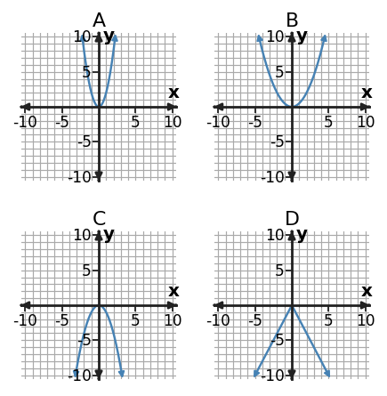

Algebra 1 · Unit 4 · Section 4.3 · Investigation
Transformation Lab
Transformations
Learning Target: Students will analyze and graph transformations involving stretches, compressions, and reflections.
Directions
- Work with a partner unless your teacher assigns a different grouping.
- Show the evidence you use, not only the final answer.
- When a representation changes, keep the meaning of the quantities attached to your work.
- Revise an answer if later evidence shows that your first claim was incomplete.
Part 1 · Transformation Match

For each graph, describe the transformation from its parent: reflection, vertical stretch, or vertical compression.
Part 2 · Transform a Table
Parent values for $f(x)=x^2$ are shown. Complete the outputs for $g(x)=-2f(x)$.
| $x$ | -2 | -1 | 0 | 1 | 2 |
|---|---|---|---|---|---|
| $f(x)$ | 4 | 1 | 0 | 1 | 4 |
| $g(x)$ |
Part 3 · Same Transformation, Different Family
Describe what $g(x)=\frac{1}{2}f(x)$ does if $f$ is linear, absolute value, or quadratic. What changes? What stays family-specific?
Synthesis
Explain how multiplying outputs by a negative number combines two transformations.